- 1. 개요
- 2. 역사 (The Chronicles of Hyobin Metro)
- 3. 역대 사장
- 4. 주요 시설 및 인프라
- 4.1. 글로벌 및 지역 협력
- 4.2. 미디어 믹스
- 5. 운영 노선
- 6. 소속 차량
- 7. 상징
- 8. 채용과 직장생활
- 9. 여담(사건 사고)
- 9.1. 혐오 세력 'A씨 윤재훈' 연대기
- 9.2. 공사의 '무관용' 시스템과 법적 승리
- 9.3. 조직 문화
- 9.4. 기타 여담 및 밈
- 10. 효빈 도시철도 성지 순례 가이드
- 10.1. BanG Dream! 시리즈 성지
- 10.2. 러브 라이브! 시리즈 성지
- 10.3. 기타 애니메이션 성지
1. 개요
효빈교통공사(HYOBIN METRO)는 효빈광역시의 효빈 도시철도 1~8호선을 건설 및 운영하는 지방공기업이다.
본래 '효빈도시공사' 산하 철도운영본부였으나, 6호선 건설 방식(중전철 vs 경전철)을 둘러싼 갈등 끝에 2016년 7월 9일 별도 법인으로 독립했다.
국내 공기업 중 압도적인 재무 건전성(부채비율 1.9%)을 자랑하며, 이는 높은 철도 이용률뿐만 아니라 세계적인 성공을 거둔 캐릭터 IP 사업 덕분이다.
효빈시의 철도 문화가 이렇게 발전한 배경에는, "오타쿠 사장(오다구)"과 "원조 덕후 시장(박현만)", 그리고 "현역 덕후 시장(박효빈)"으로 이어지는 '덕업일치(德業一致)'의 역사가 숨어 있다.
2. 역사 (The Chronicles of Hyobin Metro)
2.1. 태동기: 두 '숨은 고수'의 만남 (2000~2006.5)
오다구(吳多口) 사장: 2000년대 초반, 효빈도시공사 사장으로 취임한 그는 이름값(오타쿠)을 하는 서브컬처 매니아였다. 그는 시장에게 "철도에 모에(Moe)를 입히자"는 파격적인 보고서를 올렸다.
박현만 시장(1기)의 정체: 당시 박현만 시장은 겉으로는 점잖은 행정가였으나, 사실 <은하철도 999>와 <기동전사 건담>을 보고 자란 '1세대 클래식 애니메이션 팬(Oldtype)'이었다. 박현만 시장은 오다구 사장의 보고서를 보고 "철도는 남자의 로망이지. 진행하게."라며 즉석에서 승인했다. 이것이 전설의 시작이었다.
이 시기에 고나미(03년), 하루빈(04년), 박라미(05년), 다로나(06년 초)가 데뷔했다.
2.2. 암흑기: 윤대환의 문화 말살 (2006.6 ~ 2008.5)
윤대환 시장(비덕후, 도로지상주의자)이 당선되자마자 "이딴 만화 장난질에 세금을 쓰냐"며 격노했다. 오다구 사장은 해임되었고, 굿즈샵 폐쇄 및 HAF(애니 페스티벌)가 중단되었다. 또한 6호선 백지화 및 7호선(트램) 폐선 시도가 있었으나, 당시 역무원 임세정 등이 결사 항전했다.
2.3. 재건기: 박현만 2기 회주공업 편입 (2008.6 ~ 2011)
윤대환 당선 무효 후 복귀한 박현만 시장은 "내 건담... 아니, 우리 문화를 짓밟다니"라며 고나미를 공식 복권시키고 HAF를 더 크게 부활시켰다. 2010년 사철 회주공업(7호선)이 공영화되며 임세정이 합류했고, 2011년 5호선 개통과 함께 미소하가 데뷔했다.
2.4. 독립전쟁: 김성민 시장 vs 과장의 난 (2012~2015)
북구 인구 급증으로 6호선 건설이 재추진됨에 따라 김성민 시장은 "반드시 중형 중전철(Heavy Rail)로 건설하라"고 지시했으나, 당시 도시공사 철도계획과장은 예산 절감 실적에 눈이 멀어 "경전철(AGT)로 충분하다"며 항명했다. 격분한 김성민 시장은 "철도를 망치는 도시공사에서 운영권을 뺏겠다"며 2016년 7월 9일 효빈교통공사 분사를 단행했다. 6호선은 시장의 뜻대로 중전철로 개통되었고, 캐릭터 라세나가 데뷔했다.
2.5. 전성기: 박효빈 시정과 문화 제국 (2022 ~ 현재)
박효빈 시장은 아버지뻘인 박현만 전 시장의 영향을 받아 어릴 때부터 고나미 굿즈를 모으던 '성덕(성공한 덕후)'이다. 8호선(유리아), 빈효선(전노아) 합류로 '레일루미네'를 완성하고, 영업이익 1조 시대를 열었다.
3. 역대 사장
| 대수 | 이름 | 재임 기간 | 비고 |
|---|---|---|---|
| (전신) | 오다구 (吳多口) | 2000~2006 | 구 효빈도시공사 사장. 효빈 철도 캐릭터의 아버지. 윤대환에게 쫓겨남. |
| 초대 | 박철군 | 2016.01 ~ 2019.01 | 구 도시공사 철도본부장 출신. 분사 초기 조직 안정화. |
| 2대 | 정민재 | 2019.01 ~ 2022.06 | |
| 3대 | 최대현 | 2022.07 ~ 2026.07 | 박효빈 시장 임명. 취임사에서 "오다구 정신 계승" 선언. |
| 4대 | 정시원 | 2026.07 ~ 현재 |
4. 주요 시설 및 인프라
본사 굿즈샵은 북구 고송동 본사 1층에 있으며, 거의 박물관 수준이다. 이외에도 주요 역(효빈역, 창선역, 소조역 등) 10개소에 거점 굿즈샵을 운영 중이다.
전체 매장 안내 [ 펼치기 · 접기 ]


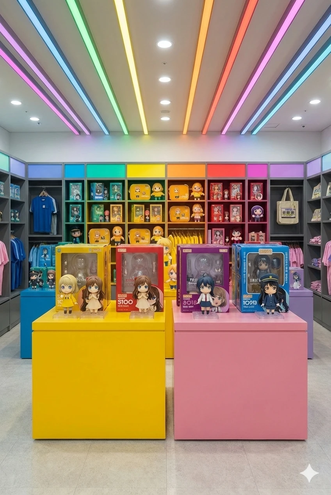
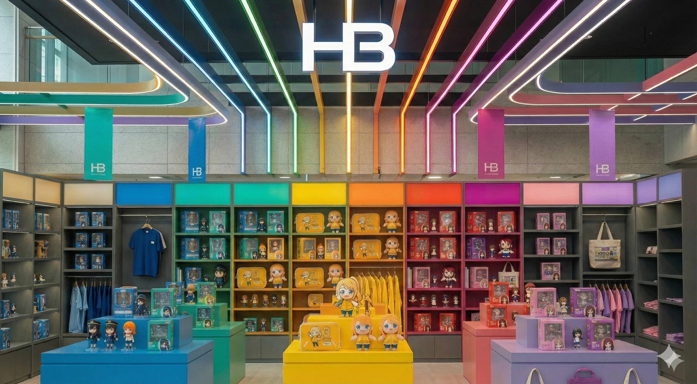
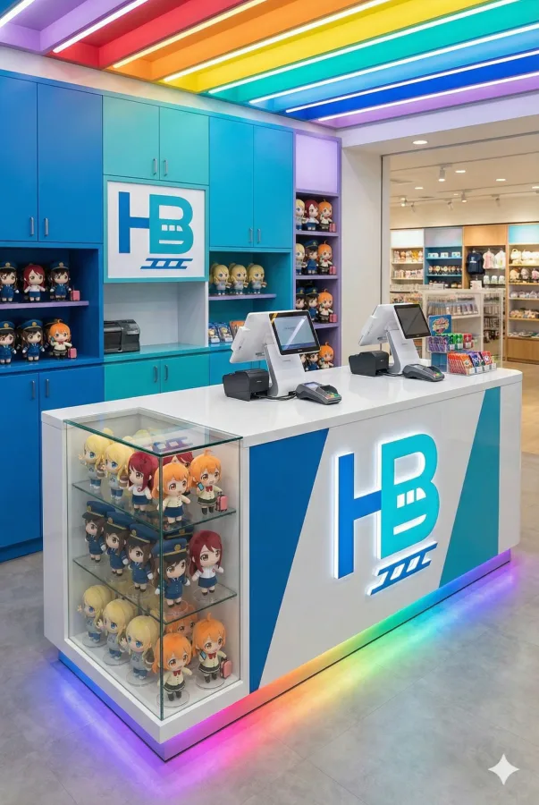
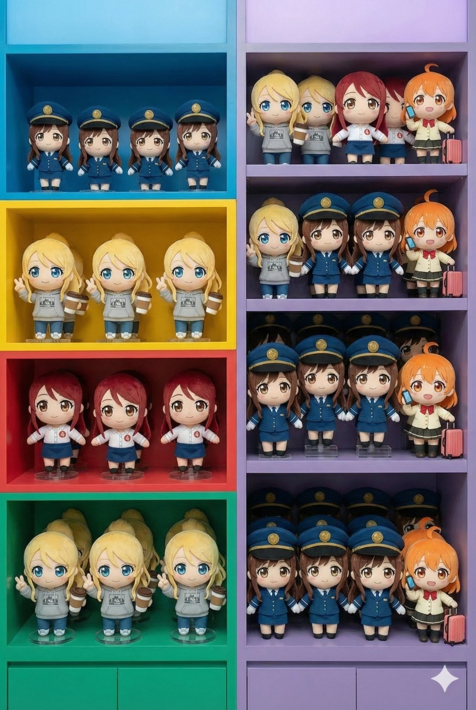
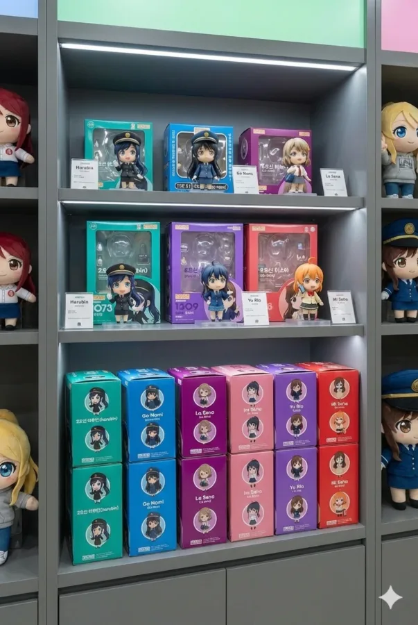
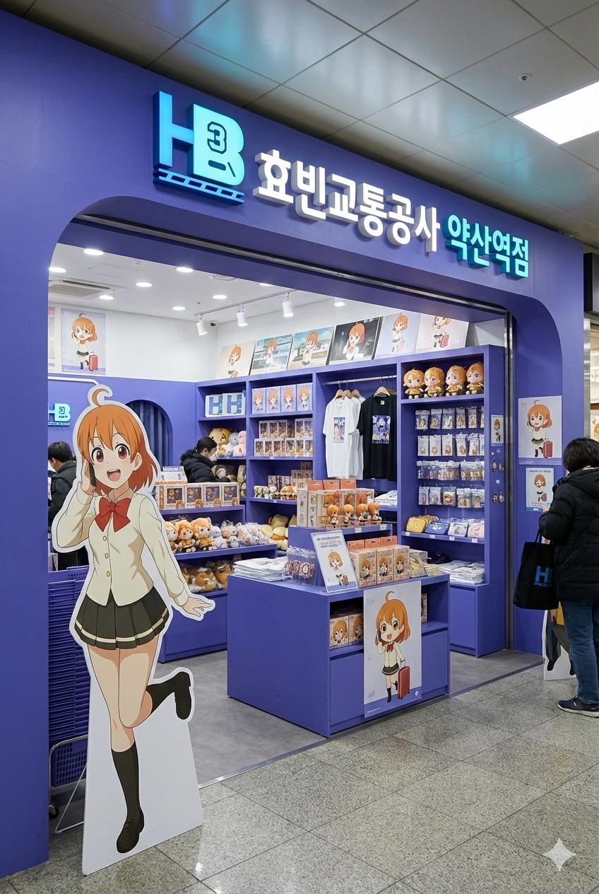
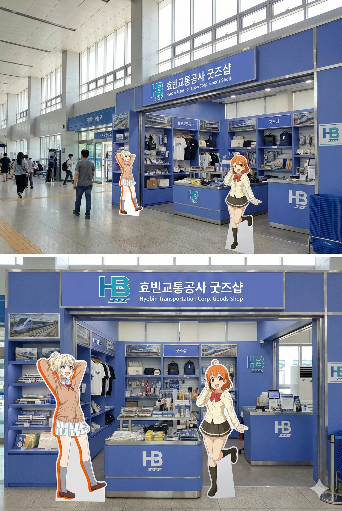
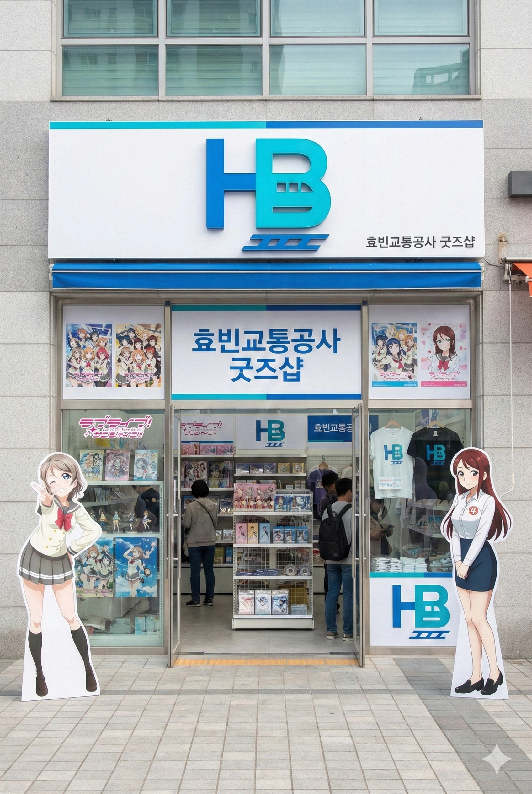
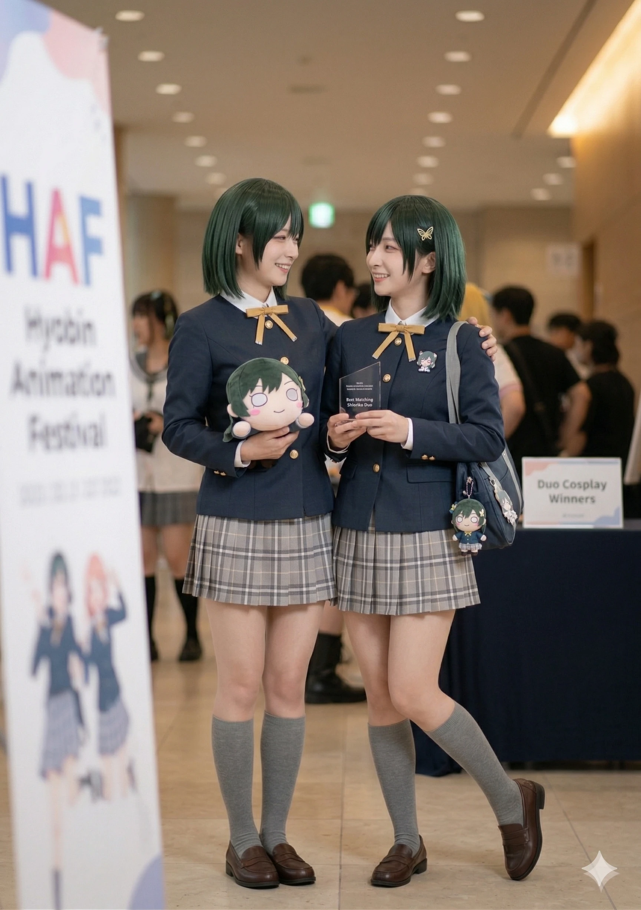
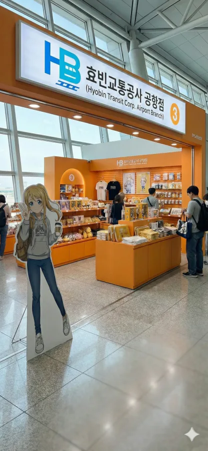
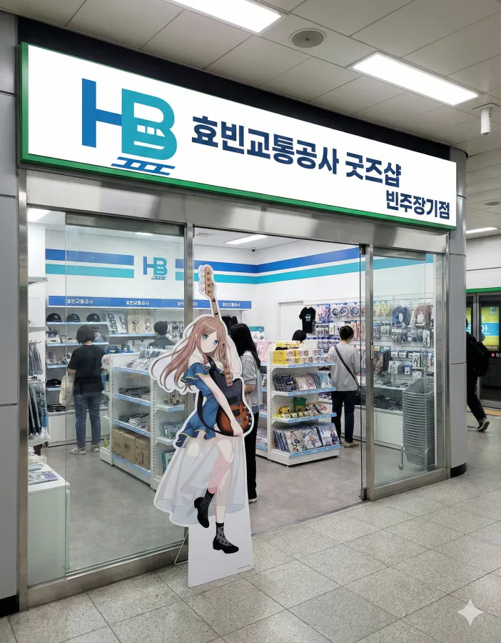
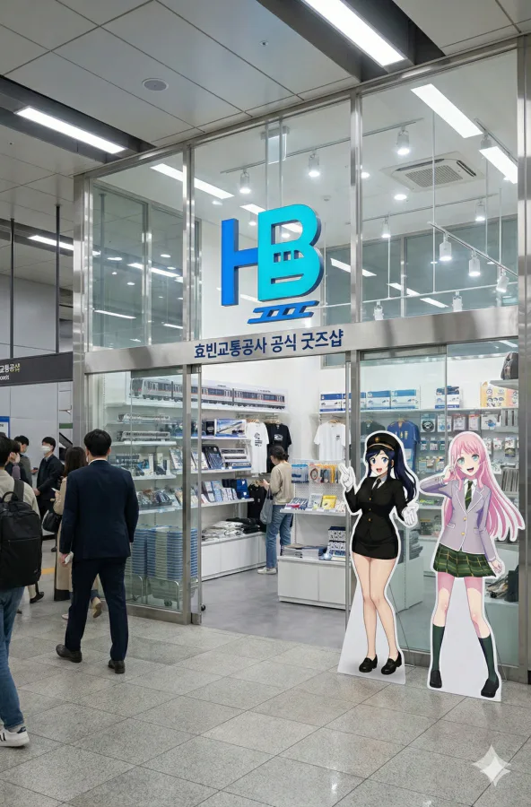
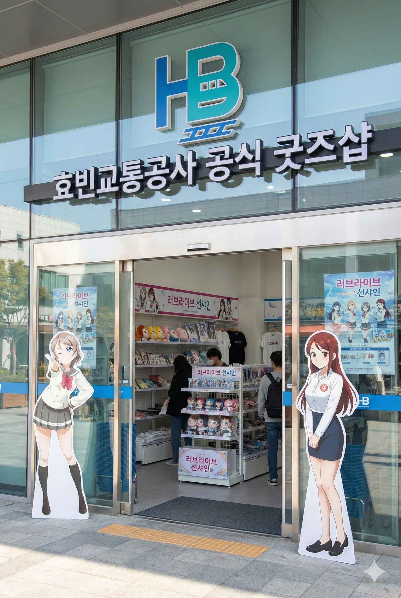
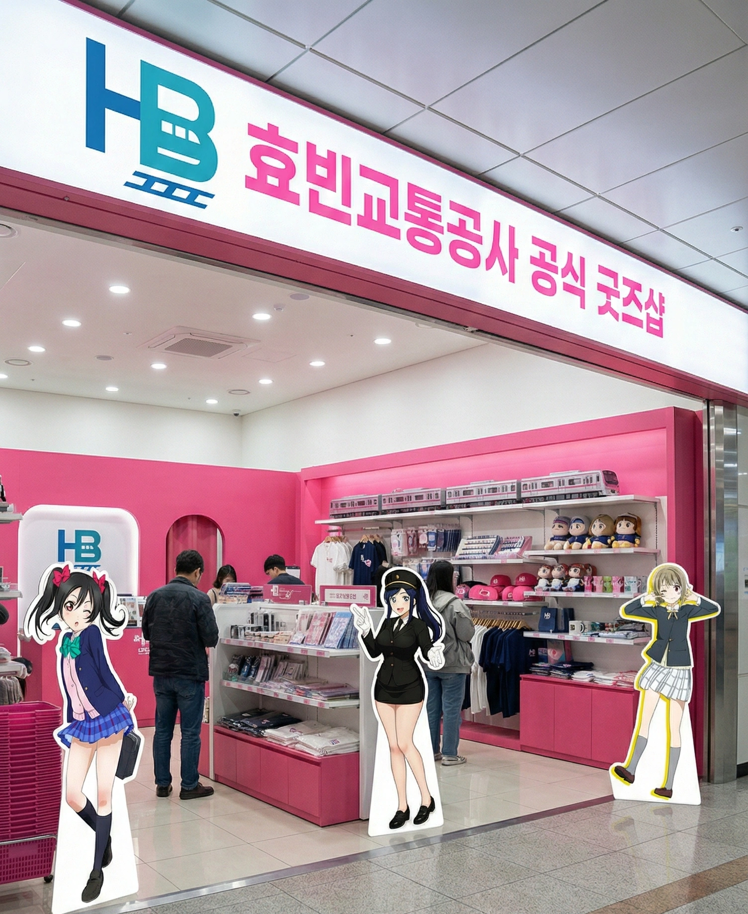
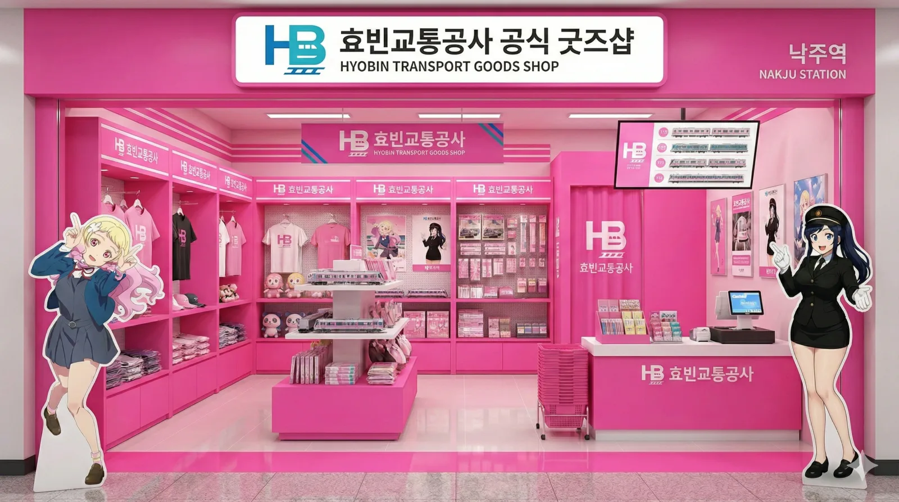
- 효빈대 철도캐릭터 성지 박물관: 효빈대학교 교통대학 내 위치. 박라미와 임세하의 'F학점 성적표' 등신대 및 설정 전시. 퇴역 전동차 개조 카페 운영.
- 효빈교통공사 철도박물관: 3호선 팔조차량기지 옆. 철도운전체험 및 애니메이션 콜라보 전시.
래핑열차 전시(...)
4.1. 글로벌 및 지역 협력
코레일(KORAIL) 효빈본부는 국영 기업임에도 효빈시의 기조에 맞춰 빈효선 캐릭터 '전노아' 사업을 적극 지원한다. (굿즈 수익 배분 협약 체결)
또한 일본 누마즈(러브라이브), 가나자와(아이돌마스터) 등 자매도시와 교류하며 HAF 기간 콜라보 굿즈를 출시한다.
4.2. 미디어 믹스
자체 제작 애니메이션 <달려라! 효빈철도>, <철덕일기>, <철도부!> 등이 유튜브에서 인기이며, 만화판도 존재한다. 굿즈는 SEGA, Good Smile Company와 협약을 체결하여 고퀄리티 피규어 등을 제작한다.
5. 운영 노선
5.1. 현재 운영중인 노선
| 노선 | 노선명 | 기점 | 종점 | 길이 | 개통일 | 역 수 |
|---|---|---|---|---|---|---|
| 1 | 1호선 | 곽암해수욕장/창선 | 장선/승남해수욕장 | 107.7km | 1984.12.02 | 68 |
| 2 | 2호선 | 중앙로 | 월천/효빈항 | 57.21km | 1989.02.03 | 49 |
| 3 | 3호선 | 팔조 | 효빈국제공항 | 32.61km | 1994.02.09 | 24 |
| 4 | 4호선 | 해운산업지구 | 천가 | 40.46km | 2003.03.05 | 30 |
| 5 | 5호선 | 청덕공원 | 포성산 | 22.81km | 2011.05.08 | 16 |
| 6 | 6호선 | 마잡 | 고송나루 | 21.61km | 2016.04.03 | 22 |
| 7 | 7호선 | 어간중앙 | 효빈대입구 | 23.59km | 1931.04.05 | 67 |
| 8 | 8호선 | 곽산 | 신흥 | 15.82km | 2024.03.04 | 20 |
5.2. 공사중인 노선
| 노선 | 노선명 | 기점 | 종점 | 길이 | 개통 예정일 |
|---|---|---|---|---|---|
| 창 | 창전선 | 팔조 | 하성천 | 12.68km | 2027.09.29 |
| 5 | 5호선 연장 | 포성산 | 하미 | 21.1km | 2032.05.11 |
신설 예정인 효빈권 광역전철역
5.3. 공사예정 및 계획중 노선
청엽선: 엽월대~청엽국제학교 (2034년 예정)
안천선: 안천중앙~이자중앙
9호선: 북고송~흑택 (약 30km)
5.4. 계획중인 노선 상세
| 노선 | 노선명 | 기점 | 종점 | 길이 | 역 수 | 개통 예정일 |
|---|---|---|---|---|---|---|
| 1호선 | 연장 계획 | 장선 | 아이 | 약 15km | 6개 | 미정 |
| 4호선 | 연장 계획 | 천가 | 약산 | 약 12.5km | 5개 | 미정 |
| 8호선 | 연장 계획 | 신흥 | 청엽구 효빈동 / 중구·북구 고송동 | 미정 | 미정 | 미정 |
5.5. 승무사업소 목록
| 노선 | 승무사업소 |
|---|---|
| 1 | 곽산승무사업소, 추산승무사업소, 화소승무사업소 |
| 2 | 입동승무사업소, 신영승무사업소, 어간승무사업소 |
| 3 | 청능승무사업소 |
| 4 | 장원승무사업소, 뇌전승무사업소 |
| 5 | 전천승무사업소 |
| 6 | 오내승무사업소 |
| 7 | 항동3가승무사업소, 중앙로1가승무사업소 |
| 8 | 주곡승무사업소 |
5.6. 차량사업소 목록
| 노선 | 차량사업소 |
|---|---|
| 1 | 곽산차량사업소[중정비], 승남차량사업소, 장선차량사업소[중정비] |
| 2 | 항동차량사업소[중정비], 입동차량주박기지 |
| 3 | 팔조차량사업소[중정비], 주길차량사업소 |
| 4 | 고해차량사업소, 평당차량사업소 |
| 5 | 청덕차량사업소, 하미차량사업소(예정) |
| 6 | 마잡차량사업소 |
| 7 | 내항차량사업소 |
| 8 | 곽산차량사업소[중정비] |
5.7. 관리역 목록
관리역 상세 목록 [ 펼치기 · 접기 ]
6. 소속 차량
- 효빈교통공사 1000호대 전동차(1~3세대): 재적된 편성은 76편성으로, 1세대 차량은 11편성이 재적되어 있으며, 2세대 이후 차량은 65편성이다. 1세대는 8량 5편성, 9량 6편성이다 (주로 탄성지선에 다닌다) (총 85량). 2세대이후는 총 9량 65편성이다(일부는 탄성지선에, 대부분 본선구간에 다닌다) (총 585량)
- 효빈교통공사 2000호대 전동차 (1~2세대): 중형전철로 재적된 편성은 본선(1세대 23편성, 2세대30편성) 53편성, 어간지선(모두 1세대) 7편성이다. 본선은 8량 53편성(424량)이고, 어간지선은 6량 6편성, 5량 1편성(41량)이다.
- 효빈교통공사 3000호대 전동차(1~2세대) : 중형전철로 제작되었으며 총 7량 41편성(287량) 이다.
- 효빈교통공사 4000호대 전동차: 중형전철 6량1편성또는 5량 1편성으로 구성되며 현재운행차량은 6량 10편성, 5량 35편성(235량)이다.
- 효빈교통공사 5000호대 전동차 : 경전철 5량 23편성(총 115량)이다.
- 효빈교통공사 6000호대 전동차: 7량 1편성이다. 전술했듯이 이전에 수요관련으로 인해 조정되어 원래 6량과 5량열차로 존재했던 열차들이었으나, 수요가 넘쳤기 때문에 결론적으로 두 종류의 열차를 증차하여 7량으로 늘렸다. 총 45편성이 재적되어있으며 305량이 생산되어있다.
- 효빈교통공사 7000호대 전동차 (1~4세대): 1968년 이전 서울과 부산에서 운행하던 열차는 당연히 1980년을 지나며 폐차되었고, 현재는 도야마 시내궤도선과 도야마 항선에서 사용하는 열차와 유사한 열차를 사용하는 중이다. 3량 1편성과 2량1편성열차가 있으며 중보지선에 2량열차가 들어가고, 3량열차는 본선에 들어간다. 3량편성과 2량편성 모두 33편성이 존재하고, 총 165량이 있다.
- 효빈교통공사 8000호대 전동차: 안내궤조식(AGT)으로, 일본의 유리카모메와 비슷한 제원의 열차를 사용한다. 4량 1편성으로 총21편성이 있으며, 총 84량이 있다. 추가도입 예정이다.
7. 상징
7.1. CI

도시이름 및 공사의 이름은 효빈의 영어 이니셜과 철로, 철길을 연계한 디자인으로 깔끔하고 철도관련된 로고로는 매우 심플하게 디자인되었고, 색도 매우 예쁜 편이라 호평을 받는 편이다.
7.2. 슬로건
- 메인 슬로건: 안전과 문화가 만나는 곳, 효빈 메트로가 시민의 행복을 싣습니다.
- 문화/경영 슬로건: 덕심(德心)이 곧 경쟁력이다! 압도적 덕력, 압도적 재무건전성.
- 시민 친화 슬로건: 늘 설레는 일상, 캐릭터와 함께 달리는 HYOBIN METRO.
- 내부 핵심 가치 슬로건: 규정은 피로 쓰였다. 안전은 FM, 문화는 New Wave.
7.3. 캐릭터
각 노선별로 마스코트 캐릭터가 존재하는 미친 덕력을 자랑하는(…) 회사이다. 박씨 시장들의 덕력과 오다구, 최대현 시장의 미친 덕력이 반영된 결과
7.3. 1. 🔵 1호선: 고나미 (Ko Nami)
"효빈 철도의 살아있는 전설이자 영원한 캡틴"
| 구분 | 상세 내용 |
|---|---|
| 나이/생일 | 만 26세 (1999년생) |
| 소속/직급 | 효빈교통공사 승무본부 1호선 기관사 (대리급 대우) |
| 학력 | 리사초 - 효빈중 - 효빈여고 - 효빈대학교 교통대학 (철도운전시스템공학 / 수석 졸업) |
| 표면적 성격 | [FM 원칙주의자] 복장, 시간, 안전 수칙을 칼같이 지키는 무서운 선배. "규정은 피로 쓰였다"는 신념을 가짐. |
| 반전 매력 | [고차원 성덕 (성공한 덕후)] 신형 전동차(갑종회송)가 들어오는 날엔 눈이 뒤집혀서 카메라 들고 제일 먼저 달려나감. |
| 정치 성향 | 對 윤대환: 경멸 (안전 무시). 對 박효빈: 절대적 신뢰 (최애이자 지지자). |
| 관계성 | • 하루빈(2호선): 맨날 갈구지만 내심 아끼는 직속 후배. • 임세하(7호선): 그녀의 'F학점 사유(신차 구경)'를 유일하게 이해하고 쉴드쳐줌. |
7.3. 2. 🟢 2호선: 하루빈 (Ha Rubin)
"웃으면서 뼈 때리는 처세술 만렙 직장인"
| 구분 | 상세 내용 |
|---|---|
| 나이/생일 | 만 24세 (2001년생) |
| 소속/직급 | 효빈교통공사 역무본부 2호선 역무원 (사원) |
| 학력 | 고송초 - 소요중 - 효빈종합고 - 효빈대학교 교통대학 (철도운영시스템공학) |
| 표면적 성격 | [능글맞은 인싸] 친화력 MAX. 대학가(2호선) 진상 취객도 웃으면서 돌려보냄. 고나미가 혼내도 "선배님 커피 콜?" 하며 넘김. |
| 숨겨진 서사 | [현실적인 생계형] 거창한 이념보다 '내 월급'과 '워라밸'이 중요함. 인력을 충원해 준 박현만/박효빈 시장을 생존 본능으로 지지함. |
| 주요 업무 | 어간중앙역 등 혼잡역 지원 근무. 라세나(6호선) 같은 학생들을 잘 챙겨줌. |
7.3. 3. 🟡 3호선: 박라미 (Park Lami)
"화려한 외모 뒤에 숨겨진 F학점의 눈물"
| 구분 | 상세 내용 |
|---|---|
| 나이/생일 | 만 21세 (2004년생) |
| 신분/소속 | 엽월대학교 경영대학 경영학과 2학년 (재학) |
| 학력 | 사가당초 - 중수여중 - 중수여고 - 엽월대학교 (A등급 명문사립) |
| 표면적 성격 | [쿨뷰티 퀸카] 계산 빠르고 효율적인 경영학도. 4개 국어(한/영/일/중) 능통. 일본 팬덤 인기 1위. |
| 흑역사 | [F학점 듀오] 1학년 때 신형 전동차 시운전 보러 수업 쨌다가 전공필수 F 맞음. (박물관에 성적표 박제됨) |
| 관계성 | • 임세하(7호선): F학점 동지이자 영혼의 파트너. • 전노아(빈효선): '비(非)효빈대 연합'을 결성하여 효빈대 카르텔을 견제함. |
7.3. 4. 🟠 4호선: 다로나 (Da Rona)
"소심하지만 불의 앞에서는 단호박"
| 구분 | 상세 내용 |
|---|---|
| 나이/생일 | 만 22세 (2003년생) |
| 소속/직급 | 효빈교통공사 기술본부 산업관리직 (주임) |
| 학력 | 이자초 - 이자중 - 창전상업고등학교 (철도산업과 / 특성화고) |
| 표면적 성격 | [소심한 대쪽] 평소엔 말도 잘 못 걸고 쭈뼛거리지만, 규정 위반이나 불법 행위 앞에서는 "안 됩니다!!" 하고 버티는 외유내강. |
| 핵심 가치 | [정의구현] 윤대환 시절의 비리와 불법을 '범죄'로 규정하고 혐오함. 4호선 골목상권(빵집)을 사랑하는 따뜻한 언니. |
| 관계성 | • 유리아(8호선): 같은 특성화고/공고 라인으로서 기특해하고 챙겨줌. |
7.3. 5. 🔴 5호선: 미소하 (Mi Soha)
"천사표 얼굴로 사회복지정책을 분석하는 괴물 신인"
| 구분 | 상세 내용 |
|---|---|
| 나이/생일 | 만 20세 (2005년생) |
| 신분/소속 | 효빈대학교 사회과학대학 사회복지정책학과 1학년 |
| 학력 | 성내초 - 사복중 - 복지여고 - 효빈대학교 (S등급 국립 / 박효빈 시장 직속 후배) |
| 표면적 성격 | [엘리트 천사] 상냥하고 지적인 말투. 약자를 위한 교통 복지 정책에 진심인 브레인. |
| 반전 매력 | [하드코어 정책덕후] 철도 시설과 사회복지정책을 무서울 정도로 잘 분석하고 정책을 제안해내는 괴물 같은 능력의 소유자이다. |
| 관계성 | • 05년생 트리오: 임세하(7호선), 전노아(빈효선)와 동갑내기 절친. • 임세하(7호선): 대학에서 교양수업때 만나 대화가 통하는 대학 친구. |
7.3. 6. 🟣 6호선: 라세나 (Ra Sena)
| 구분 | 상세 내용 |
|---|---|
| 나이/생일 | 19세 (2006년생 / 고3) |
| 신분/소속 | 중수여자고등학교 3학년 (이과 최상위권) |
| 학력 | 중수초 - 중수여중 - 중수여고 (재학 중) |
| 진로 목표 | 효빈대학교 간호대학 (S등급) 또는 엽월대학교 간호대학 (A등급) |
| 성격 | [성실한 치유계] 시끄러운 언니들(전노아, 임세하) 사이에서 조용히 공부하며 중재하는 막내. |
7.3. 7. 🌸 7호선: 임세정 (Im Sejeong) - 언니
"트램을 지켜낸 억척스러운 가장"
| 구분 | 상세 내용 |
|---|---|
| 나이/생일 | 만 30세 (1995년생) |
| 소속/직급 | 효빈교통공사 역무본부 7호선(트램) 역무원 (대리) |
| 학력 | 효빈초 - 내조중 - 다판고 - 효빈과학대학교 (철도운영과 / 전문대) |
| 성격 | [생존형 리더] 윤대환의 트램 폐지 시도에 맞서 싸운 투사. 10살 어린 동생(세하) 뒷바라지하는 현실 K-장녀. |
| 위상 | 고나미(26세)보다 나이가 많고, 사철(회주공업) 시절부터 일한 최고참급이라 사내에서 입지가 탄탄함. |
7.3. 8. 🌸 7호선: 임세하 (Im Seha) - 동생
"머리는 좋은데 덕질하느라 몸이 고생하는 공대생"
| 구분 | 상세 내용 |
|---|---|
| 나이/생일 | 만 20세 (2005년생) |
| 신분/소속 | 효빈대학교 공과대학 기계공학과 1학년 |
| 학력 | 효빈초 - 중수여중 - 중수여고 - 효빈대학교 (S등급 국립) |
| 성격 | [공대 너드 (Nerd)] 기계 구조와 역학에 환장함. 평소엔 과탑급 우등생이지만... |
| 흑역사 | 1학년 1학기 때 신형 모터 보러 수업 쨌다가 전공 F 맞음. (언니한테 등짝 맞음) |
| 관계성 | • 05년생 트리오: 미소하, 전노아와 동갑. • F학점 동맹: 박라미와 만나면 서로를 껴안고 운다. |
7.3. 9. 🔮 8호선: 유리아 (Yu Ria)
"감성보다는 팩트, 효율을 사랑하는 MZ"
| 구분 | 상세 내용 |
|---|---|
| 나이/생일 | 17세 (2008년생 / 고1) |
| 신분/소속 | 효빈기계공업고등학교 철도관리과 1학년 |
| 학력 | 상원대초 - 평당중 - 효빈기계공고 (특성화고) |
| 성격 | [팩트폭격기] 감정 호소보다는 데이터와 효율을 중시함. 인문계 거부하고 공고를 선택한 확고한 신념의 소유자. |
| 롤모델 | 다로나(4호선). (고졸 취업 후 현장에서 인정받는 모습을 동경함) |
7.3. 10. 🚄 빈효선: 전노아 (Jeon Noah)
"내가 나서야 해결된다! 정의로운 관종"
| 구분 | 상세 내용 |
|---|---|
| 나이/생일 | 만 20세 (2005년생) |
| 신분/소속 | 평안명대학교 사회과학대 행정학과 1학년 |
| 학력 | 당가초 - 당가중(전학)→중수여중 - 당가고(전학)→중수여고(졸업) - 평안명대 (재학) |
| 성격 | [행동파 관종] 나서는 걸 좋아하고 칭찬받으면 춤추는 스타일. 부드럽지만 불의를 보면 못 참음. |
| 과거 서사 | 중수고 전학 당시 폐부 직전이던 철도동아리(임세하, 라세나)를 혼자 힘으로 살려낸 것을 인생 최대 업적으로 삼음. |
| 관계성 | • 05년생 트리오: 임세하, 미소하와 동갑. • 코레일 소속 캐릭터지만 효빈교통공사 캐릭터들과 한 팀처럼 움직임. |
7.3. 11. ☁️ 창전선: 심세이 (Shim Se-i)
"우아함을 연기하지만 본질은 라틴 하이텐션과 구소쿠무시"
| 구분 | 상세 내용 |
|---|---|
| 나이/생일 | 만 17세 (2008년생) |
| 신분/소속 | 월삼여자고등학교 1학년 (재학) / 효빈교통공사 창전선 공식 홍보대사 |
| 학력 | 창전초 - 월삼여중 - 월삼여고 (재학) |
| 표면적 성격 | [우아한 엘리트 아가씨] 창전구 찐부촌 출신으로, 유창한 스페인어와 영어를 구사하며 고급스러운 모노레일 이미지를 연기함. |
| 반전 매력 | [라틴의 정열 & 개복치] 당황하거나 모노레일이 흔들리면 양팔을 꺾고 파닥거리는 기괴한 '구소쿠무시(심해 등각류) 댄스'를 시전함. |
| 혈통 설정 | 스페인인 어머니와 한국인 아버지 사이에서 태어난 다문화 가정 2세. |
| 관계성 | • 유리아(8호선): 유일한 08년생 동갑. 유리아가 몽키스패너 들고 다가오면 기겁하며 도망가는 환장의 듀오. • 임세정 & 임세하(7호선): 스페인과 필리핀의 '식민 지배' 역사 밈 때문에 틈만 나면 7호선 자매에게 결재판으로 토벌당함. |
🏫 중수고 동아리 (찐친 라인): 전노아 - 임세하 - 라세나
📉 F학점의 비극 (개그 콤비): 박라미 & 임세하
👶 05년생 동갑내기 (황금 세대): 미소하(복지) - 임세하(기계) - 전노아(행정)
🍼 08년생 막내 라인 (극과 극 콤비): 유리아(기계공고 비글) & 심세이(창전구 아가씨)
⚔️ 대항해시대 앙숙 밈 (역사 고증): 심세이(스페인 혼혈) vs 7호선 자매(필리핀 혼혈)
7.4. 로고송
효빈! 우리를 잇는 레일! (Line of Light!) 안전과 연결의 약속, 함께 가는 빛의 속도!
자, 용기를 내! 최고의 노선은 너야!
멈추지 않아, 이 도시는 우리를 기다려 다시 만나, 효빈교통공사! (Yeah!)
8. 채용과 직장생활
8.1. 채용: 덕력(德力)은 스펙이자, '선'을 아는 자의 증명
HYOBIN METRO의 채용 시스템은 실력주의를 표방하지만, 그 실력에는 철도 기술에 대한 전문성과 서브컬처에 대한 미친 디테일을 아우르는 '통합 덕력(德力)'이 필수적으로 요구된다.
8.1. 1. 인재상: 'S급' 덕후와 '특성화고' 신화의 조화
공사는 학력과 배경을 초월한 다원적인 인재 풀을 자랑한다. 하지만 그들이 추구하는 '최고 등급 인재'는 규정 준수(FM)와 문화적 열정(New Wave)이라는 두 축을 동시에 갖춘 기형적인 인재다.
• 엘리트 기관사의 'F학점 동맹':
o 고나미 (1호선): 효빈대 교통대학 수석 졸업 엘리트지만, 신형 모터를 보러 수업을 쨌다가 전공 F학점을 맞은 화려한 흑역사가 있다. 그러나 그녀의 "규정은 피로 쓰였다"는 광적인 신념은 안전 분야에서 높이 평가받아 채용되었다. F학점 동맹의 리더, 취업은 수석으로 한 기적의 모범생. 규정 준수와 일탈을 동시에 이룬 진정한 천재 너드다.
o 박라미 (3호선) & 임세하 (6호선): 이들 역시 신념을 지키기 위해 F학점을 맞았고, 서로를 'F학점 동맹'이라 부르며 깊은 동료애를 나눈다. 공사 측은 이들의 F학점 성적표를 본사 박물관에 전시하여, '성공한 고집'과 '주체적인 문화 형성'의 역사를 기리고 있다. (사실상 '레일루미네' 캐릭터 공식 설정에 기여한 훈장이다.)
• 고졸 취업 신화와 현장 리스펙:
o 다로나 (4호선): 고졸 취업 후 현장에서 리더로 인정받는 실무형 인재다. 그녀를 롤모델로 삼고 공고를 선택한 유리아 (17세, 효빈기계공고)가 있을 정도로 현장 실무가 존중받는 문화를 보여준다. (특성화고 학생들에게 HYOBIN METRO는 거의 신의 직장으로 통한다.)
• 숨겨진 가치: 덕력(德力) 심층 평가:
o 노골적으로 '덕력 테스트'를 하지는 않지만, 역대 시장과 사장단(오다구, 박현만, 박효빈, 최대현)이 모두 서브컬처 매니아였던 역사 덕분에 '철도 및 서브컬처에 대한 깊은 이해와 애정'은 강력한 플러스 요인이다. 기관사 고나미처럼 신형 전동차 반입일에 카메라를 들고 뛸 정도의 '성덕(성공한 덕후)' 기질은 오히려 장려된다. (면접에서 최애 캐릭터의 설정 디테일을 묻는 비공식 질문이 있다는 카더라가 있다.)
8.1. 2. '고스펙 덕후' 대란과 지역 인재 할당제
HYOBIN METRO의 압도적인 복지와 '덕업일치' 문화 소문이 전국으로 퍼지자, 타 지역의 고스펙 덕후들이 몰려와 공채 경쟁률이 폭등하는 사태가 발생했다.
• 경쟁률 폭발: SKY/KAIST 출신 수재들까지 '덕질하면서 고연봉 공기업 다니기'라는 꿈을 안고 효빈시 공채에 뛰어들었다. (전국적으로 행시/고시 공부하던 인재들이 전공책 대신 '레일루미네 설정집'을 외우는 웃픈 풍경이 펼쳐졌다.)
• 지역 인재 방어 행정: 경쟁 과열로 인해 정작 효빈 지역 인재들이 설 자리가 좁아지는 역차별 문제가 불거지자, 효빈시청은 긴급히 '효빈 지역 거주자 가산점'과 효빈대 출신을 위한 '지역 인재 할당제'를 대폭 강화하여 '탈효빈' 현상을 막았다. 이 덕분에 효빈대학교의 입결은 전국구 최상위권으로 치솟았다. (박효빈 시장은 이것이야말로 진정한 '지방 살리기'라고 자화자찬했다.)
8.2. 직장 생활: 고강도 덕질과 0% 퇴사율의 아이러니
HYOBIN METRO 직원들은 고강도의 철도 안전 업무와, 박효빈 시장의 문화 안보 시스템 구축을 위한 창의적 행정을 동시에 수행해야 한다.
8.2. 1. '모에 독재'와 창의적 스트레스
직원들의 업무 환경은 철도 운영과 IP 사업 기획이 융합된 형태다. 그 중심에는 '미친 디테일'을 요구하는 성덕 시장이 있다.
• '굴뚝 없는 공장'의 노동자들: 박효빈 시장은 서브컬처를 "거대한 굴뚝 없는 공장"으로 규정하며, 단순한 취미가 아닌 핵심 산업으로 취급한다. 이 때문에 기획안 하나에도 '미친 디테일'과 '모에적 완성도'가 요구된다.
• 결재 반려 사유 No.1: 시청 및 공사 내부에서 발생하는 최악의 문화충격은 기획안이 "기획안에 모에(Moe) 요소가 부족함. 다시."라는 사유로 반려되는 것이다. 행정고시를 패스한 엘리트 공무원이 '모에력' 부족으로 퇴짜를 맞는 곳은 대한민국에서 여기뿐일 것이다.
o (익명의 제보에 따르면, 박 시장은 '쿠로사와 루비'의 5호선 컬러(빨강) 우연의 일치에 감탄하며, "이 정도의 비합리적 개연성은 갖춰야 기획안"이라고 말했다고 한다.)
• 내부 커뮤니티 '블라인드' 반응 (효빈시청/공사):
o [제목: 시장님이 미쳤어요. 근데 돈은 많아요. 그래서 우린 행복...한 건가?] — (베스트 글) 이게 이 회사를 가장 잘 요약한 문장이다.
o 익명 (철도운영): "차라리 철도 안전 점검표를 달달 외우는 게 편하다. 오늘은 출퇴근 시 레일루미네의 캐릭터 굿즈 위치에 따른 미관 개선안을 작성했다. 행정직인지 디자인팀인지 모르겠다."
o 익명 (행정직): "옆자리 대리님이 '모에 요소 채우는 법 특강'을 사비로 들으러 갔다. 이게 나라냐?"
o 익명 (타 지자체): "효빈시 전입 가고 싶다. 연봉이랑 성과급 보면 일할 맛 날 것 같다. (그러나 전입 성공률은 로또 당첨 확률과 비슷하다.)"
8.2. 2. 조직 문화: 수평적 덕력과 규율의 공존
• 덕후 관료제의 특징: 박 시장부터 말단 직원까지 모두 서브컬처라는 공통 분모를 공유한다. 상명하복보다는 '수평적인 덕력 공유' 분위기가 강하다. 업무와 관련된 공식 덕밍아웃은 오히려 승진 가산점으로 이어진다는 것이 공공연한 비밀이다.
• 안전은 예외: 하지만 철도 안전과 관련된 분야에서는 고나미 기관사의 신념처럼 "규정은 피로 쓰였다. 안전은 FM"이라는 엄격한 기조가 유지된다. 덕심(德心)이 규율을 넘어서는 순간, 바로 징계 대상이 된다는 것을 직원들 모두 인지하고 있다.
• 'μ's의 정신'이 새겨진 계단: 효빈시청 계단에는 "누군가 도와주길 바란다면, 네가 먼저 시작해!"라는 μ's(뮤즈)의 정신이 담긴 문구가 새겨져 있다. 이는 공사 직원들에게도 '현장 중심 행정'과 '끈기 있는 민원 해결'을 독려하는 모토가 되고 있다. (일명 '자가 발전형 행정' 독려 문구. 물론 저걸 실천하면 야근은 늘어난다.)
• 복지: 모든 공무원 및 공사 직원은 압도적인 연봉과 성과급 외에도, 효빈 HAF 기간 중 무료 VVIP 입장권 및 굿즈 선구매권을 제공받는다. 이 선구매 혜택은 중고 거래 시장에서 엄청난 프리미엄이 붙지만, 직원들은 공사의 자존심을 지키기 위해 전량 소장하는 것이 불문율이다. (팔면 신고당한다는 소문이 있다.)
9. 여담(사건 사고)
효빈교통공사(이하 '공사')는 효빈광역시의 서브컬처 친화 정책과 철도 모에화의 상징이다. 덕분에 공사의 시설과 문화는 외부의 극단적인 혐오 세력의 끊임없는 공격 대상이 되어왔다. 하지만 공사는 무관용 원칙 (Zero Tolerance), 스마트 시티 기술, 그리고 무엇보다 효빈 시민들의 강력한 문화적 자부심에 힘입어 이 모든 테러 시도를 성공적으로 분쇄했으며, 이 일련의 사건들은 오히려 공사의 투명한 행정 시스템과 원칙주의를 입증하는 계기가 되었다.
9.1. 혐오 세력 'A씨 & 윤재훈' 연대기
공사 시설물에 대한 연쇄적인 테러 시도의 주범은 효빈대학교에서 극우 성향의 혐오 발언 및 선거 불복 음모론을 유포하다가 결국 출교 (영구 제명) 처분을 받은 전(前) 부동산학과 학생 A씨 (02년생)와, 극렬 트램 폐지론자였던 윤대환 전 시장의 아들 윤재훈 (96년생)이었다.
이들은 효빈시의 '연결성'과 '덕후 친화적 상생'이라는 핵심 가치를 혐오했으며, 주요 교통 시설물을 대상으로 난동을 부렸다.
9.1.1. 혐오의 서막: 모노레일과 트램 난동
- 효빈대 모노레일 난동 (2023년): 출교 처분을 받은 A씨는 효빈대학교 내부를 순환하는 캠퍼스 순환 모노레일 (H.C.M.L)에 난입했다. "모노레일은 낭비이자 나약함의 상징이다!"라고 적힌 플래카드를 펼치고 운행을 방해했다. (철도운영학과 학생들은 "저럴 거면 자퇴하고 운전면허나 따지 그랬냐"며 냉소적으로 대응했다.)
- 트램 선로 투신 및 급제동 사건 (2024년): 제22대 총선에서 전국 최저 득표율인 5.2%를 기록하며 낙선한 무소속 윤재훈 후보는 2024년, 효빈대학교 인근 트램 (7호선) 선로에 뛰어들어 운행을 방해하다가 체포되었다. 시속 40km로 달리던 트램은 당시 철도운전학과 실습생 (4학년 김철수)의 기적적인 비상 제동 및 샌딩 (모래 살포) 조작으로 끔찍한 인명 사고를 피했다.
트램 폐지를 주장했던 윤재훈은 트램 덕분에 목숨을 건진 아이러니.
9.1.2. 혐오의 자멸: 보몽역 '걷다(歩む)' 시비 사건 (2023)
장소: 보몽역 (1호선)
관련 캐릭터: 우에하라 아유무 (니지동)
이 사건은 '보몽역 망신 사건' 또는 '혐오의 제자리걸음 사건'으로 불리며, 팬덤의 높은 지성과 논리력을 보여주는 사례가 되었다.
9.1.3. 국제적 망신: 엠마의 빵 난동 사건 (2024 여름)
장소: 6호선-7호선 간접 환승 통로 협업 카페
관련 캐릭터: 엠마 베르데
A씨는 카페의 '엠마의 트램 탑승 팥빵'을 훼손하려다 실패했다. 이 난동 영상은 엠마 베르데의 성우 사시데 마리아에게까지 전달되었고, 그녀는 SNS 성명을 통해 "A씨는 현실 경제의 가장 기초적인 원리조차 이해하지 못하고 있습니다. 그분은 '경제학'보다 '인성 교육'이 시급하며, 그의 행동은 단순히 경멸스럽습니다."라고 비판했다. A씨는 국제적 망신을 당했다.
9.1.4. 성우 수호전: 베르데 홀 '메카쿠시테!' 사건 (2024)
장소: 효빈대학교 베르데 홀
관련 캐릭터: 오사카 시즈쿠, 나카스 카스미
윤재훈과 A씨가 성우 토크쇼에 난입하자 시민들은 일본어로 "메카쿠시테! (目隠して, 눈 가려)!!"라고 외치며 성우들의 눈과 귀를 막아 보호했다. 시장의 김 비서관은 몸을 날려 패널을 받아내고 '치카리코 수호신'이라는 별명을 얻었다.
9.1.5. 물리적 패배: 탕쿠쿠 대첩 (2025 HAF)
관련 캐릭터: 탕쿠쿠 (Liella!)
윤재훈과 A씨는 탕쿠쿠 성우 Liyuu의 팬미팅에 난입하여 중국어 욕설 "차오마"를 외치며 난동을 부렸다. 이에 격분한 Liyuu의 팬덤과 중국인 유학생 팬들이 물리적인 응징을 가했고, 두 사람은 현장에서 묵사발이 되었다.
9.1.6. 주민의 분노: 야마부키 사아야 대첩 (2025)
장소: 사능역 (3호선)
관련 캐릭터: 야마부키 사아야 (BanG Dream!)
3호선 사능역 광고판을 훼손하려던 윤재훈과 A씨는 사능동 상인회(주민들)에게 포위당했다. 상인회장은 "네 아버지가 우리 동네 상권 다 망쳤잖아! 박효빈 시장님이 빵 먹방까지 찍어가며 살려놓은 상권인데, 감히 윤대환 찌꺼기들이 찬물을 끼얹어?!"라며 분노했다.
9.2. 공사의 '무관용' 시스템과 법적 승리
효빈교통공사 법무팀은 A씨와 윤재훈 등의 혐오 세력에 대해 일관되게 '무관용 원칙 (Zero Tolerance)'을 적용했다.
• 스마트 폴(CCTV)의 승리: A씨는 보몽역 사건 후 인권위에 진정을 제기했으나, 공사가 제출한 CCTV 증거 영상으로 인해 진정은 각하되었다.
• 증오 범죄에 대한 시장의 무관용 선언: 박효빈 시장은 자신을 향한 "튀기" 등의 비하 발언에 대해 "합의는 없다"며 금융 치료(손해배상)와 형사 처벌을 안겨주었다.
9.3. 조직 문화: 덕심과 규율의 공존
• 덕후 관료제의 운영 원칙: "덕질은 업무의 일부"가 공식적으로 인정되지만, "규정은 피로 쓰였다"는 원칙 하에 안전 앞에서는 타협이 없다.
• 도시 정책의 수호신들: 효빈대 사회복지정책학과 학생회실에는 오사카 시즈쿠(치밀함)와 나카스 카스미(귀여운 음모)의 패널이 '지도 이념'으로 모셔져 있다.
9.4. 기타 여담 및 밈 (Meme)
- 04년생 여왕님 밈: 04년생 성우들이 02년생 A씨를 논리로 제압하자 "02 < 04" 공식이 성립됨. A씨는 '나이값 못하는 찌질이'의 대명사가 되었다.
- A씨의 '고립의 탑' 절규: 엠마빵 사건 이후 에타에 쓴 글이 비추 4만 개를 받으며 자멸.
- A씨의 충격 근황: 결국 계속되는 범죄행각으로 구속되어 효빈교도소에 수감되었다. 하필 그곳은 애니메이션 캐릭터 굿즈 생산을 교도소 노역으로 진행하는 곳이라 매우 고통스러워한다는 후문이 있다(...)
- 기적의 지명 일치: 4호선 고해(치카), 천가(치카), 2호선 흑택(다이아), 5호선 루비(루비) 등 효빈시의 지명과 애니 캐릭터 이름이 우연히(?) 일치한다.
10. 효빈 도시철도 성지 순례 가이드 (Holy Site Pilgrimage Guide)
효빈 도시철도 노선망에 존재하는 모든 역명은 효빈시의 역사적 지명이며, 애니메이션 캐릭터들의 이름 한자, 별명, 혹은 그룹의 상징적 단어와 놀랍도록 기적적인 우연으로 일치한다. (박효빈 시장은 이 모든 것이 '운명'이라고 주장하고 있다.)
이는 팬덤 내에서 공식적인 성지 순례 코스로 공인되었으며, 특히 승하차량이 높은 환승역들 (고송교차로역, 중수역, 이자역)이 자비와 축복이 넘치는 최고 성지로 꼽힌다.
| 구분 | 역 명 (노선) | 2024년 승하차량 | 순위 | 관련 캐릭터 (작품) 및 효빈위키식 코멘트 |
|---|---|---|---|---|
| 최고 성지 | 고송교차로역 (2, 6) | 107,157명 | 2위 | 뱅드림! 타카마츠 토모리 (高松 燈)의 성씨 高松(고송)과 우연히 일치. 압도적 승하차량 2위의 최고 혼잡지역. (토모리의 울음소리가 2호선/6호선에 울려 퍼진다) |
| 중수역 (2, 6) | 78,315명 | 5위 | 러브라이브! 니지동 나카스 카스미 (中須 かすみ)의 성씨 中須(중수)와 우연히 일치. (카스밍은 5위 정도는 차지해 줘야지! 뿅뿅!) | |
| 이자역 (4, 빈효) | 72,063명 | 7위 | 러브라이브! 선샤인!! 사쿠라우치 리코 (桜内 梨子)의 이름 梨子(이자)와 우연히 일치. 환승 수요 높은 리코피 성지. (리코가 피아노 치는 곳이 이자역인 셈이다) |
10.1. BanG Dream! 시리즈 (뱅드림!) 성지 (총 37곳)
뱅드림 성지 목록 보기 [ 펼치기 · 접기 ]
| 역 명 (노선) | 승하차량 | 순위 | 관련 캐릭터 및 코멘트 |
|---|---|---|---|
| 타카마츠 토모리 (高松 燈) 성지 | |||
| 고송역 (6) / 고송나루역 (3, 6) / 동고송역 (6) | 43,213명 / 37,095명 / 28,412명 | 19위 / 24위 / 38위 | 성씨 高松(고송)이 우연히 일치하는 최다 역명 보유 지역. |
| 토모리해수욕장역 (3) | 11,322명 | 99위 | 지명이 우연히 이름 '토모리'와 동일한 지역. (여름에 토모리가 울면서 기타 친다) |
| 등동역 (2) | 8,127명 | 135위 | 이름 燈(등) 한자 + 동(洞) 지명이 우연히 일치. |
| 아오바 모카 (青葉) 성지 | |||
| 청엽구청역 (1, 3) / 청엽역 (3) / 청엽국제학교역 (5) | 62,170명 / 22,919명 / 9,382명 | 10위 / 48위 / 115위 | 성씨 青葉(청엽)이 우연히 지명과 일치. 청엽구청역은 승하차량 10위의 주요 성지. |
| 마잡역 (2, 6) | 40,513명 | 23위 | 이름 모카의 중국어 번안 한자가 우연히 지명과 일치. (모카는 글로벌 스타다) |
| 시이나 타키 (椎名 立希) 성지 | |||
| 입희역 (1, 2) | 50,591명 | 17위 | 이름 立希(입희) 한자가 우연히 지명과 일치. 5만 명대의 입희역은 생각보다 분주하다. 입희야! |
| 진희역 (6) | 32,492명 | 32위 | 시이나 타키의 언니 시이나 마키와 러브라이브 니시키노 마키의 우연한 공동 성지. |
| 쿠라타 마시로 (倉田 ましろ) 성지 | |||
| 시로역 (2, 5) | 30,424명 | 34위 | 이름 마시로(ましろ)에서 따온 듯한 지명이 우연히 존재. |
| 창전구청역 (1) / 창전역 (1) | 30,273명 / 15,492명 | 35위 / 80위 | 성씨 倉田(창전)과 우연히 일치. 창전구청역은 '아마네 여왕님의 지능 테스트 통과 구역' 드립의 배경이 되었다. |
| 진백역 (5) | 10,292명 | 109위 | 이름 마시로의 중국 번안 한자가 우연히 지명과 일치. |
| 야마부키 사아야 (山吹 沙綾) 성지 | |||
| 사능역 (3) / 사능복지관역 (7) / 사능동3가역 (7) 외 2곳 | 10,283명 / 1,582명 / 1,322명 | 110위 / 253위 / 258위 | 이름 沙綾(사능)이 우연히 지명과 일치하는 곳. '사아야 대첩'이 발생한 혐오 세력의 무덤(陵)이자 역사적인 성지. |
| 산취역 (빈효) | 5,682명 | 159위 | 성씨 山吹(산취) 한자가 우연히 지명과 일치. |
| 하자와 츠구미 (羽沢) 성지 | |||
| 우택역 (4) / 남우택역 (5) | 19,023명 / 15,022명 | 60위 / 85위 | 성씨 羽沢(우택) 한자가 우연히 지명과 일치. |
| 동리역 (1) | 15,322명 | 82위 | 이름 츠구미의 중국 번안 한자가 우연히 지명과 일치. |
| 우다가와 아코/토모에 (宇田川) 성지 | |||
| 우전역 (1, 2) | 44,081명 | 18위 | 성씨 宇田川(우전) 한자가 우연히 지명과 일치. |
| 히로마치 나나미 (広町 七深) 성지 | |||
| 칠심역 (2) | 23,232명 | 47위 | 이름 七深(칠심) 한자가 우연히 지명과 일치. |
| 보통역 (1) | 10,238명 | 112위 | 평소 말버릇 "보통"을 연상시키는 지명이 우연히 존재. (보통이지만 보통이 아닌 역) |
| 치하야 아논 (千早 愛音) 성지 | |||
| 아논타워역 (1) | 20,232명 | 57위 | 아논이 자기 이름에 타워 붙이는 설정과 우연히 '아논타워'라는 지명이 일치하는 지역. (아논이 시장님한테 직접 로비했을지도 모른다) |
| 기타 뱅드림! 성지 | |||
| 쌍엽역 (2) | 23,292명 | 46위 | 후타바 츠쿠시 (二葉)의 성씨와 유사한 뜻의 지명이 우연히 일치. |
| 리의역 (빈효) | 18,372명 | 63위 | 지명이 우연히 우자와 리이 (リイ)의 이름과 동일. |
| 비마역 (6) / 비마리유적지구역 (1) | 17,921명 / 8,192명 | 67위 / 133위 | 우에하라 히마리 이름 중국 번안 한자와 우연히 일치. |
| 북택역 (빈효) | 9,183명 | 119위 | 키타자와 하구미 (北沢)의 성씨 한자가 우연히 일치. |
| 팔조역 (3) | 8,832명 | 123위 | 야시오 루이 (八潮)의 성씨 한자가 우연히 일치. |
| 백합공원역 (4) | 8,822명 | 125위 | 우시고메 유리의 이름 한자가 우연히 지명과 일치. |
| 이부역 (4) | 7,282명 | 144위 | 와카미야 이브의 "이브"를 연상시키는 지명이 우연히 존재. |
| 삼각역 (4) | 6,235명 | 154위 | 미스미 우이카 (三角)의 성씨 三角(삼각) 한자가 우연히 일치. |
| 투자역 (3) | 5,428명 | 162위 | 키리가야 토우코 (燈子)의 이름 한자가 우연히 일치. |
| 리사역 (7) | 4,931명 | 174위 | 지명이 우연히 이마이 리사 (リサ)의 이름과 동일. (리사가 '불꽃놀이'를 한다던 그 리사역) |
| 빙천역 (4) | 4,822명 | 184위 | 히카와 사요/히나 (氷川)의 성씨 氷川(빙천) 한자가 우연히 일치. |
| 서수역 (4) | 3,928명 | 193위 | 토가와 미즈호의 이름 한자가 우연히 일치. |
| 추자역 (1) | 3,312명 | 197위 | 니쥿키 히나코 (日菜子)의 이름 한자가 우연히 일치. |
| 뇌전역 (4) | 3,093명 | 203위 | 세타 카오루 (瀬田)의 성씨 한자가 우연히 일치. |
| 잠재역 (4) | 2,492명 | 211위 | MyGO!!!!! 노래 '잠재표명' 중 잠재를 연상시키는 지명이 우연히 일치. |
| 사야역 (4) | 2,092명 | 225위 | 히카와 사요 (紗夜)의 이름 한자가 우연히 일치. |
| 만마루역 (7) | 2,039명 | 226위 | 마루야마 아야의 별명 "만마루"를 연상시키는 지명이 우연히 존재. |
| 유성당역 (7) | 2,001명 | 232위 | 이치가야 아리사 할머니의 가게 "유성당" 이름과 우연히 동일한 지명. |
| 시곡역 (빈효) | 1,992명 | 234위 | 이치가야 아리사 (市ヶ谷) 성씨 한자와 우연히 유사. |
| 사능삼거리역 (7) / 사능동1가역 (7) | 1,204명 / 1,043명 | 262위 / 265위 | 야마부키 사아야 (沙綾)의 이름 한자가 우연히 일치. |
10.2. 러브 라이브! 시리즈 (Love Live! Series) 성지 (총 22곳)
러브라이브 성지 목록 보기 [ 펼치기 · 접기 ]
| 역 명 (노선) | 승하차량 | 순위 | 관련 캐릭터 및 코멘트 |
|---|---|---|---|
| Aqours (선샤인!!) | |||
| 이자공원역 (1, 4) / 이자출장소역 (1) | 58,559명 / 14,283명 | 13위 / 89위 | 사쿠라우치 리코 (梨子)의 이름 한자가 우연히 지명과 일치. (성지순례 인증샷은 피아노 조형물 앞에서 필수) |
| 앵내역 (4) | 22,782명 | 49위 | 사쿠라우치 리코 (桜内)의 성씨 桜内(앵내) 한자가 우연히 지명과 일치. |
| 도변역 (4, 5) | 36,621명 | 27위 | 와타나베 요우 (渡辺)의 성씨 渡辺(도변) 한자가 우연히 지명과 일치. |
| 요우역 (4) | 17,392명 | 72위 | 지명이 우연히 이름 '요우' (曜)와 동일. (전부 다 있는 요우가 우연히 존재한다) |
| 고해역 (1, 빈효) | 14,290명 | 88위 | 타카미 치카 (高海)의 성씨 高海(고해) 한자가 우연히 지명과 일치. |
| 천가역 (4) | 4,173명 | 190위 | 이름 千歌(천가) 한자가 우연히 지명과 일치. 치카의 귤밭 성지. |
| 타천역 (빈효) | 13,485명 | 95위 | 츠시마 요시코의 별명 "타천(堕天)"을 연상시키는 지명이 우연히 존재. (타천사님 여기서 영업하십니다. 짐승의 숫자는 666) |
| 루비역 (5) | 8,827명 | 124위 | 지명이 우연히 이름 '루비'와 동일. 5호선 노선색(빨강)과 캐릭터 컬러가 기적적으로 완벽 일치. |
| 흑택역 (2) | 6,263명 | 153위 | 쿠로사와 루비/다이아 (黒澤)의 성씨 黒澤(흑택) 한자가 우연히 지명과 일치. |
| 화환역 (5) | 7,592명 | 138위 | 쿠니키다 하나마루 (花丸)의 이름 花丸(화환) 한자가 우연히 지명과 일치. |
| 소원역 (4) | 5,462명 | 160위 | 오하라 마리 (小原)의 성씨 小原(소원) 한자가 우연히 지명과 일치. (샤이니!) |
| 과남역 (1) | 10,326명 | 108위 | 마츠우라 카난 (果南)의 이름 한자가 우연히 지명과 일치. |
| μ's (뮤즈) | |||
| 소조역 (5) | 21,123명 | 55위 | 미나미 코토리 (ことり)의 이름을 연상시키는 한자 조합 지명이 우연히 존재. |
| 서목역 (1) / 야진입구역 (1) | 4,929명 / 2,023명 | 175위 / 229위 | 니시키노 마키 (西木野)의 성씨/이름 한자 일부가 우연히 지명과 일치. |
| 진희역 (6) | 32,492명 | 32위 | 니시키노 마키와 시이나 마키의 우연한 공동 성지. |
| 니지동 (니지가사키 학원 스쿨 아이돌 동호회) | |||
| 아이역 (빈효) | 17,931명 | 66위 | 지명이 우연히 이름 '아이' (愛)와 동일. |
| 궁하역 (빈효) | 14,621명 | 86위 | 미야시타 아이 (宮下)의 성씨 宮下(궁하) 한자가 우연히 지명과 일치. |
| 천왕사역 (1) | 15,622명 | 79위 | 텐노지 리나 (天王寺)의 성씨 天王寺(천왕사) 한자가 우연히 지명과 일치. |
| 보몽역 (1) | 8,642명 | 128위 | 우에하라 아유무 (歩夢)의 이름 歩夢(보몽) 한자가 우연히 지명과 일치. (A씨가 시비를 걸다 논리로 대차게 당했던 역사적인 역) |
| 상원초등학교역 (7) | 1,792명 | 246위 | 우에하라 아유무 (上原)의 성씨 한자가 우연히 일치. |
| 과림역 (빈효) | 3,852명 | 195위 | 아사카 카린 (果林)의 이름 한자가 우연히 지명과 일치. |
| 근강역 (빈효) | 1,928명 | 238위 | 코노에 카나타 (近江)의 성씨 近江(근강) 한자가 우연히 지명과 일치. |
| Liella! (리에라) | |||
| 당가역 (2, 빈효) | 34,294명 | 30위 | 탕 쿠쿠 (唐可可) 이름 일부 唐可(당가) 한자가 우연히 지명과 일치. '탕쿠쿠 대첩'의 배경 지역과 가까움. |
10.3. 기타 애니메이션 성지 (K-ON!, 봇치 더 록!, 걸즈 밴드 크라이) (총 7곳)
| 역 명 (노선) | 승하차량 | 순위 | 관련 캐릭터 및 코멘트 |
|---|---|---|---|
| K-ON! 성지 | |||
| 추산역 (1) | 5,433명 | 161위 | 아키야마 미오 (秋山)의 성씨 秋山(추산) 한자가 우연히 일치. (베이스 치는 미오의 중2병을 여기서 느낄 수 있다) |
| 무기역 (1) | 5,001명 | 170위 | 지명이 우연히 코토부키 츠무기의 별명 "무기"와 동일. |
| 우이문화촌역 (7) / 우이역 (7) | 3,955명 / 1,049명 | 191위 / 263위 | 지명이 우연히 히라사와 우이 (憂)의 이름과 동일. |
| 봇치 더 록! 성지 | |||
| 홍하역 (빈효) | 1,632명 | 250위 | 이지치 니지카 (虹夏)의 이름 虹夏(홍하) 한자가 우연히 지명과 일치. |
| 봇지마을역 (7) | 901명 | 274위 | 지명이 우연히 고토 히토리의 별명 "봇치"의 변형과 유사. 7호선 트램 종점 근처. (고토 히토리의 극심한 사회 공포증처럼 승하차량은 꼴찌권이다... 안습) |
| 걸즈 밴드 크라이 성지 | |||
| 도향역 (1) | 2,232명 | 220위 | 카와라기 모모카 (桃香)의 이름 桃香(도향) 한자가 우연히 지명과 일치. (이곳에서 혁명의 기타 소리가 들린다) |